Uxntal Opcodes
Uxn has 32 standard opcodes and 8 immediate opcodes. In the table below, a dot
indicates an effect on the return stack, P is the program counter, a value' indicates a byte
length, a value" indicates a short length, an unspecified length follows the short mode and a M[value] is read from memory.
a b EQU a=b' a' LDZ M[a'] a b ADD a+b
a INC a+1 a b NEQ a≠b' a b' STZ M[b']:a a b SUB a-b
a POP a b GTH a>b' a' LDR M[P±a'] a b MUL a×b
a b NIP b a b LTH a<b' a b' STR M[P±b']:a a b DIV a÷b
a b SWP b a a JMP P±:a a" LDA M[a] a b AND a&b
a b c ROT b c a a' b JCN a'?P±:b a b" STA M[b]:a a b ORA a|b
a DUP a a a JSR P±:a .P" a' DEI D[a'] a b EOR a^b
a b OVR a b a a STH .a a b' DEO D[b']:a a hl' SFT a»l«h
BRK P:0 LIT M[P]' P:P+1
a' JCI a'?P:P+M[P]" LIT2 M[P]" P:P+2
JMI P:P+M[P]" LITr .M[P]' P:P+1
JSI P:P+M[P]" .P" LIT2r .M[P]" P:P+2
Modes
An opcode is any name in which the 3 first characters are found in the opcode table, followed by any combination of 2, k and r. Each opcode has 3 possible modes, which can combined:
- The short mode 2 operates on shorts, instead of bytes.
- The keep mode k operates without consuming items.
- The return mode r operates on the return stack.
| INC2r | |||||||
|---|---|---|---|---|---|---|---|
| k | r | 2 | opcode | ||||
| 0 | 1 | 1 | 0 | 0 | 0 | 0 | 1 |
By default, operators consume bytes from the working stack, notice how in the
following example only the last two bytes #45 and #67
are added, even if there are two shorts on the stack.
#1234 #4567 ADD12 34 ac
The short mode consumes two bytes from the stack. In the case of jump opcodes, the short-mode operation jumps to an absolute address in memory. For the memory accessing opcodes, the short mode operation indicates the size of the data to read and write.
#1234 #4567 ADD2 57 9b
The keep mode does not consume items from the stack, and pushes the result on top. Every opcode begins by popping values from the stack before operating on them. This mode keeps a copy of the stack pointer to recover after the popping stage.
#1234 #4567 ADD2k 12 34 45 67 57 9b
The return mode swaps the stacks on which an opcode
operates. Under this mode, a return address will be pushed to the working
stack, and stashing will take from the return stack. For that reason, there is
no return opcode. For example, the JSR opcode pushes the
return address onto the return stack, and JMP2r jumps to that
address.
LITr 12 #34 STH ADDr STHr 46
Immediate opcodes
Immediate opcodes are operators that do not take items from the stack, but read values stored immediately after the opcode in the program's memory. Uxntal has 8 immediate opcodes:
- The literal LIT opcodes, also written as #.
- The jump !routine.
- The conditional jump ?routine.
- The subroutine routine.
The immediate jump opcodes are slightly faster than their standard opcode counterparts, but do not have modes and cannot be used to do pointer arithmetic. The address value of the immediate opcodes are stored in memory as relative shorts, enabling routines making use of these opcodes to be moved around in the program's memory.
@on-reset ( -> )
#0007 fac-rec BRK
@fac-rec ( n* -- res* )
#0001 GTH2k ?{ NIP2 JMP2r }
OVR2 SWP2 SUB2 fac-rec MUL2 JMP2r
To learn more about each opcode, see the Opcode Reference.
The Uxntal Opcode Reference
| INC2r | |||||||
|---|---|---|---|---|---|---|---|
| k | r | 2 | opcode | ||||
| 0 | 1 | 1 | 0 | 0 | 0 | 0 | 1 |
This documentation includes hand gestures, and glyphs, which might serve a dual purpose; both enabling the usage of Uxntal outside of the computer, as well as to help students to familiarize themselves with hexadecimal finger-counting and bitwise operations.
| 00 | 01 | 02 | 03 | 04 | 05 | 06 | 07 | 08 | 09 | 0a | 0b | 0c | 0d | 0e | 0f | |
|---|---|---|---|---|---|---|---|---|---|---|---|---|---|---|---|---|
| 00 | BRK | INC | POP | NIP | SWP | ROT | DUP | OVR | EQU | NEQ | GTH | LTH | JMP | JCN | JSR | STH |
| 10 | LDZ | STZ | LDR | STR | LDA | STA | DEI | DEO | ADD | SUB | MUL | DIV | AND | ORA | EOR | SFT |
| 20 | JCI | INC2 | POP2 | NIP2 | SWP2 | ROT2 | DUP2 | OVR2 | EQU2 | NEQ2 | GTH2 | LTH2 | JMP2 | JCN2 | JSR2 | STH2 |
| 30 | LDZ2 | STZ2 | LDR2 | STR2 | LDA2 | STA2 | DEI2 | DEO2 | ADD2 | SUB2 | MUL2 | DIV2 | AND2 | ORA2 | EOR2 | SFT2 |
| 40 | JMI | INCr | POPr | NIPr | SWPr | ROTr | DUPr | OVRr | EQUr | NEQr | GTHr | LTHr | JMPr | JCNr | JSRr | STHr |
| 50 | LDZr | STZr | LDRr | STRr | LDAr | STAr | DEIr | DEOr | ADDr | SUBr | MULr | DIVr | ANDr | ORAr | EORr | SFTr |
| 60 | JSI | INC2r | POP2r | NIP2r | SWP2r | ROT2r | DUP2r | OVR2r | EQU2r | NEQ2r | GTH2r | LTH2r | JMP2r | JCN2r | JSR2r | STH2r |
| 70 | LDZ2r | STZ2r | LDR2r | STR2r | LDA2r | STA2r | DEI2r | DEO2r | ADD2r | SUB2r | MUL2r | DIV2r | AND2r | ORA2r | EOR2r | SFT2r |
| 80 | LIT | INCk | POPk | NIPk | SWPk | ROTk | DUPk | OVRk | EQUk | NEQk | GTHk | LTHk | JMPk | JCNk | JSRk | STHk |
| 90 | LDZk | STZk | LDRk | STRk | LDAk | STAk | DEIk | DEOk | ADDk | SUBk | MULk | DIVk | ANDk | ORAk | EORk | SFTk |
| a0 | LIT2 | INC2k | POP2k | NIP2k | SWP2k | ROT2k | DUP2k | OVR2k | EQU2k | NEQ2k | GTH2k | LTH2k | JMP2k | JCN2k | JSR2k | STH2k |
| b0 | LDZ2k | STZ2k | LDR2k | STR2k | LDA2k | STA2k | DEI2k | DEO2k | ADD2k | SUB2k | MUL2k | DIV2k | AND2k | ORA2k | EOR2k | SFT2k |
| c0 | LITr | INCkr | POPkr | NIPkr | SWPkr | ROTkr | DUPkr | OVRkr | EQUkr | NEQkr | GTHkr | LTHkr | JMPkr | JCNkr | JSRkr | STHkr |
| d0 | LDZkr | STZkr | LDRkr | STRkr | LDAkr | STAkr | DEIkr | DEOkr | ADDkr | SUBkr | MULkr | DIVkr | ANDkr | ORAkr | EORkr | SFTkr |
| e0 | LIT2r | INC2kr | POP2kr | NIP2kr | SWP2kr | ROT2kr | DUP2kr | OVR2kr | EQU2kr | NEQ2kr | GTH2kr | LTH2kr | JMP2kr | JCN2kr | JSR2kr | STH2kr |
| f0 | LDZ2kr | STZ2kr | LDR2kr | STR2kr | LDA2kr | STA2kr | DEI2kr | DEO2kr | ADD2kr | SUB2kr | MUL2kr | DIV2kr | AND2kr | ORA2kr | EOR2kr | SFT2kr |
- In the a b 00 c d notation, a b represent the state of the stack before the transformation, 00 represents the opcode, b d represent the state of the stack after the transformation, with "b" and "d" on top of the stack, respectively.
- The M stands for memory, D stands for device memory, a is either a byte or a short, a' is always a byte, a" is always a short, .a is a value on the return stack and .a" is a short on the return stack.
- The P, or program counter, is the location in memory right after the reading of an opcode. Immediate opcodes will have an offset equal to the length of the data stored immediately after the opcode.
Break
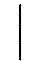
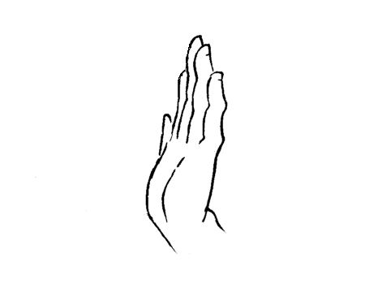
00 P:0 Ends the evaluation of the current vector. This opcode has no modes.
Jump Conditional Immediate
a' 20 a?P:P+M[P]" P:P+2 Pops a byte from the working stack and if it is not zero, moves the PC to a relative address at a distance equal to the next short in memory, otherwise moves PC+2. This opcode has no modes, it is written using the ?label format.
#0a DUP ?label INC @label ( 0a )
#0a #01 ?{ INC } ( 0a )
Jump Immediate
40 P:P+M[P]" P:P+2 Moves the PC to a relative address at a distance equal to the next short in memory. This opcode has no modes, it is written using the !label format.
#0a !label INC @label ( 0a )
#0a !{ INC } ( 0a )
Jump Stash Return Immediate
60 P:P+M[P]" P:P+2 .P" Pushes PC+2 to the return-stack and moves the PC to a relative address at a distance equal to the next short in memory. A plain label name resolves to a JSI operation. This opcode has no modes.
#07 #04 modulo BRK ( 03 ) @modulo ( a mod -- res ) DIVk MUL SUB JMP2r
Literal
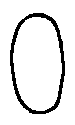
80 M[P]' P:P+1
Pushes the next bytes in memory, and moves the PC forward by the same number of bytes (i.e: 1 byte if short mode is off or 2 bytes if it is on). The LIT opcode always has the keep mode active. Notice how the 0x00 opcode, with the keep bit toggled, is the location of the literal opcodes.
LIT 12 ( 12 ) LIT2 abcd ( ab cd ) LIT2r ef01 ( . ef 01 )
Increment
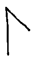
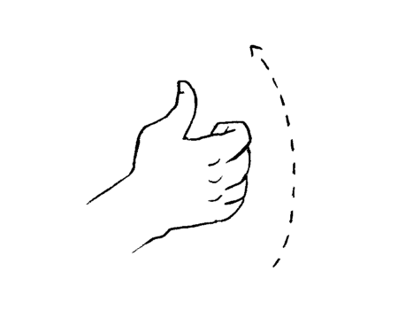
a 01 a+1 Increments the value at the top of the stack, by 1.
#01 INC ( 02 ) #0001 INC2 ( 00 02 ) #0001 INC2k ( 00 01 00 02 )
Pop
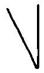
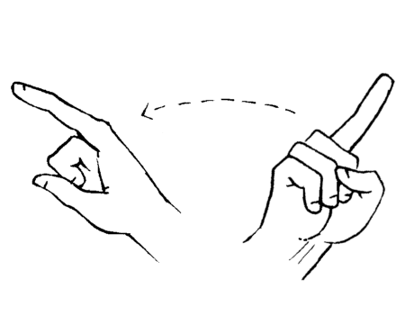
a 02 Removes the value at the top of the stack. POPk is the canonical NOP.
#1234 POP ( 12 ) #1234 POP2 ( ) #1234 POP2k ( 12 34 )
Nip
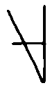
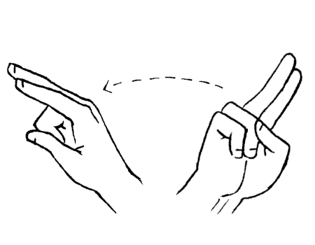
a b 03 b Removes the second value from the stack. This is practical to truncate a short into a byte.
#1234 NIP ( 34 ) #1234 #5678 NIP2 ( 56 78 ) #1234 #5678 NIP2k ( 12 34 56 78 56 78 )
Swap
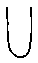
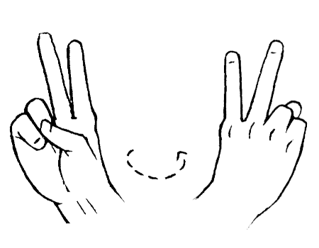
a b 04 b a Exchanges the first and second values at the top of the stack.
#1234 SWP ( 34 12 ) #1234 SWPk ( 12 34 34 12 ) #1234 #5678 SWP2 ( 56 78 12 34 ) #1234 #5678 SWP2k ( 12 34 56 78 56 78 12 34 )
Rotate
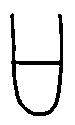
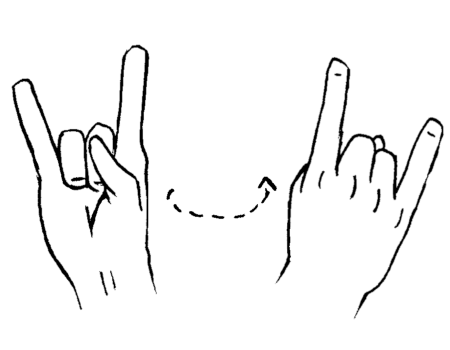
a b c 05 b c a Rotates three values at the top of the stack, to the left, wrapping around.
#1234 #56 ROT ( 34 56 12 ) #1234 #56 ROTk ( 12 34 56 34 56 12 ) #1234 #5678 #9abc ROT2 ( 56 78 9a bc 12 34 ) #1234 #5678 #9abc ROT2k ( 12 34 56 78 9a bc 56 78 9a bc 12 34 )
Duplicate
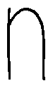
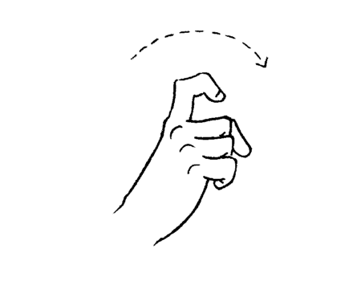
a 06 a a Duplicates the value at the top of the stack.
#1234 DUP ( 12 34 34 ) #12 DUPk ( 12 12 12 ) #1234 DUP2 ( 12 34 12 34 )
Over
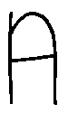
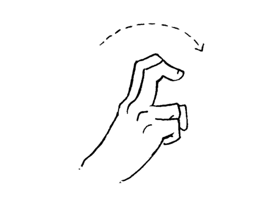
a b 07 a b a Duplicates the second value at the top of the stack.
#1234 OVR ( 12 34 12 ) #1234 OVRk ( 12 34 12 34 12 ) #1234 #5678 OVR2 ( 12 34 56 78 12 34 ) #1234 #5678 OVR2k ( 12 34 56 78 12 34 56 78 12 34 )
Equal
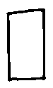
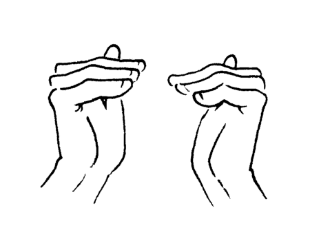
a b 08 a=b' Pushes 01 to the stack if the two values at the top of the stack are equal, 00 otherwise.
#1212 EQU ( 01 ) #1234 EQUk ( 12 34 00 ) #abcd #ef01 EQU2 ( 00 ) #abcd #abcd EQU2k ( ab cd ab cd 01 )
Not Equal
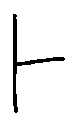
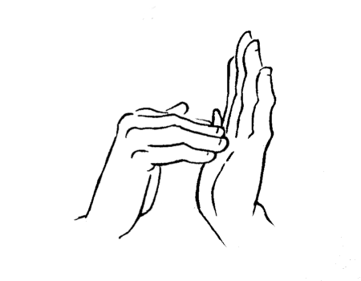
a b 09 a≠b' Pushes 01 to the stack if the two values at the top of the stack are not equal, 00 otherwise.
#1212 NEQ ( 00 ) #1234 NEQk ( 12 34 01 ) #abcd #ef01 NEQ2 ( 01 ) #abcd #abcd NEQ2k ( ab cd ab cd 00 )
Greater Than
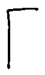
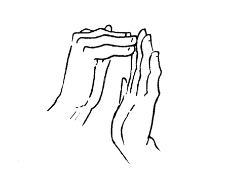
a b 0a a>b' Pushes 01 to the stack if the second value at the top of the stack is greater than the value at the top of the stack, 00 otherwise.
#1234 GTH ( 00 ) #3412 GTHk ( 34 12 01 ) #3456 #1234 GTH2 ( 01 ) #1234 #3456 GTH2k ( 12 34 34 56 00 )
Lesser Than
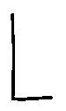
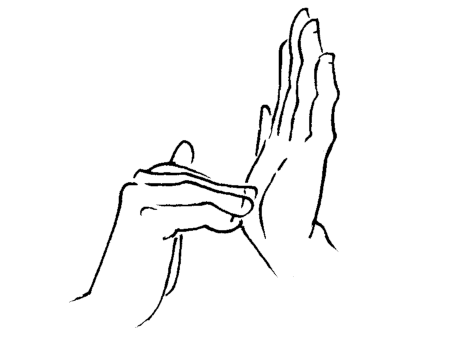
a b 0b a<b' Pushes 01 to the stack if the second value at the top of the stack is lesser than the value at the top of the stack, 00 otherwise.
#0101 LTH ( 00 ) #0100 LTHk ( 01 00 00 ) #0001 #0000 LTH2 ( 00 ) #0001 #0000 LTH2k ( 00 01 00 00 00 )
Jump
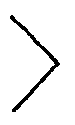
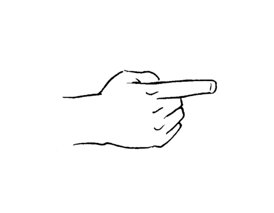
a 0c P+:a Moves the PC by a relative distance equal to the signed byte on the top of the stack, or to an absolute address in short mode.
,&skip-rel JMP BRK &skip-rel #01 ( 01 )
Jump Conditional
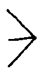
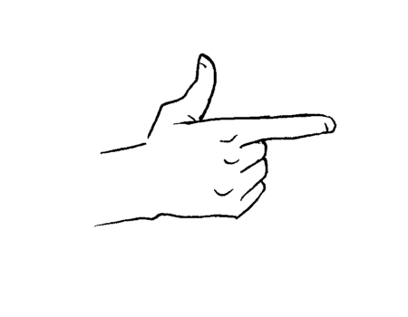
a' b 0d a?P+:b If the byte preceding the address is not 00, moves the PC by a signed value equal to the byte on the top of the stack, or to an absolute address in short mode.
#abcd #01 ,&pass JCN SWP &pass POP ( ab ) #abcd #00 ,&fail JCN SWP &fail POP ( cd )
Jump Stash Return
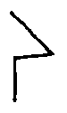
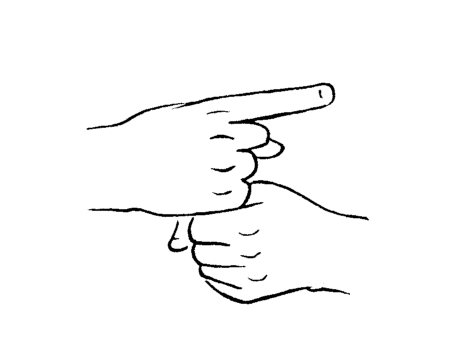
a 0e P+:a .P" Pushes the PC to the return-stack and moves the PC by a signed value equal to the byte on the top of the stack, or to an absolute address in short mode.
,&routine JSR ( . PC* ) ,&get JSR #01 BRK &get #02 JMP2r ( 02 01 )
Stash
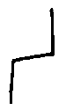
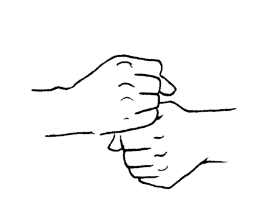
a 0f .a Moves the value at the top of the stack to the return stack. Note that with the r-mode, the stacks are exchanged and the value is moved from the return stack to the working stack.
#12 STH ( . 12 ) LITr 34 STHr ( 34 )
Load Zero-Page
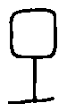
a' 10 M[a] Pushes the value at an address within the first 256 bytes of memory to the top of the stack.
|00 @cell $2 |0100 .cell LDZ ( 00 )
Store Zero-Page
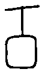
a b' 11 M[b]:a Writes a value to an address within the first 256 bytes of memory.
|00 @cell $2 |0100 #abcd .cell STZ2
Load Relative
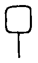
a' 12 M[P+a] Pushes a value at a relative address in relation to the PC, within a range between -128 and +127 bytes to the top of the stack.
,cell LDR2 BRK @cell abcd ( ab cd )
Store Relative
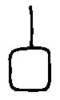
a b' 13 M[P+b]:a Writes a value to a relative address in relation to the PC, within a range between -128 and +127 bytes.
#1234 ,cell STR2 BRK @cell $2 ( )
Load Absolute
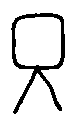
a" 14 M[a] Pushes the value at a absolute address to the top of the stack.
;cell LDA BRK @cell abcd ( ab )
Store Absolute
a b" 15 M[b]:a Writes a value to a absolute address.
#abcd ;cell STA BRK @cell $1 ( ab )
Device Input
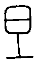
a' 16 D[a] Pushes a value from the device page to the top of the stack, a device might capture the reading of the high-byte to trigger an I/O event.
Device Output
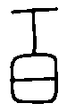
a b' 17 D[b]:a Writes a value to the device page, a device might capture the low-byte writing to trigger to an I/O event.
Add
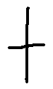
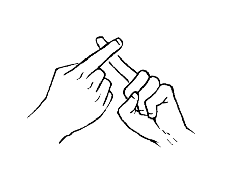
a b 18 a+b Pushes the sum of the two values at the top of the stack.
#1a #2e ADD ( 48 ) #02 #5d ADDk ( 02 5d 5f ) #0001 #0002 ADD2 ( 00 03 )
Subtract
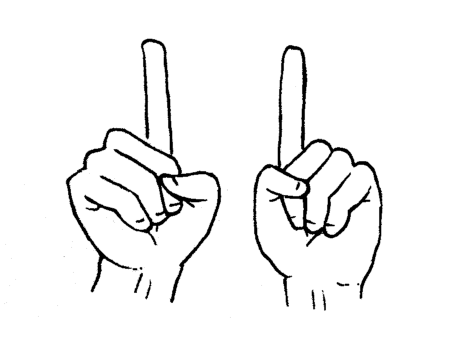
a b 19 a-b Pushes the difference of the first value minus the second to the top of the stack.
#08 #03 SUB ( 05 ) #08 #02 SUBk ( 08 02 06 ) #2000 #1000 SUB2 ( 10 00 )
Multiply
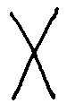
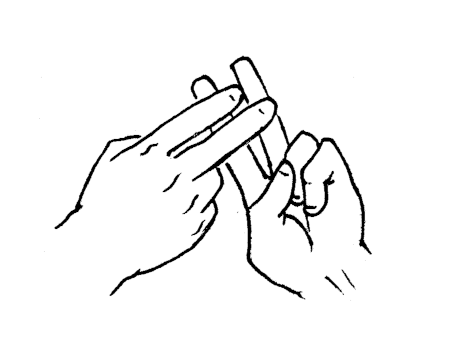
a b 1a a×b Pushes the product of the first and second values at the top of the stack.
#06 #02 MUL ( 0c ) #08 #02 MULk ( 08 02 10 ) #0800 #0002 MUL2 ( 10 00 )
Divide
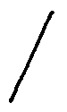
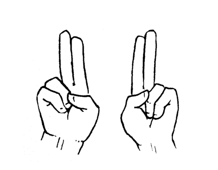
a b 1b a÷b|0 Pushes the quotient of the first value over the second to the top of the stack. A division by zero pushes zero on the stack. The rounding direction is toward zero.
#10 #02 DIV ( 08 ) #10 #03 DIVk ( 10 03 05 ) #0010 #0000 DIV2 ( 00 00 )
And
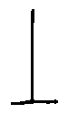
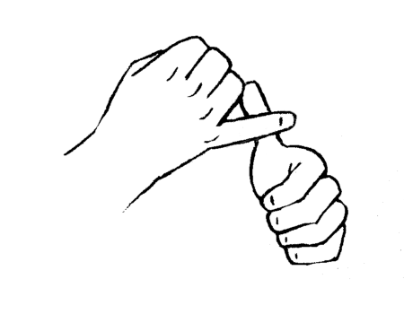
a b 1c a&b Pushes the result of the bitwise operation AND to the top of the stack.
#fc #3f AND ( 3c )
Or
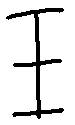

a b 1d a|b Pushes the result of the bitwise operation OR to the top of the stack.
#fc #3f ORA ( ff )
Exclusive Or
a b 1e a^b Pushes the result of the bitwise operation XOR to the top of the stack.
#fc #3f EOR ( c3 )
Shift
a hl' 1f a>>l<<h Shifts the bits of the second value of the stack to the left or right, depending on the control value at the top of the stack. The low nibble of the control value indicates how many bits to shift right, and the high nibble, how many bits to shift left. The rightward shift is done first.
#34 #10 SFT ( 68 ) #34 #01 SFT ( 1a ) #34 #33 SFTk ( 34 33 30 ) #1248 #34 SFTk2 ( 12 48 34 09 20 )
- Rekka Bellum, illustration
- Kira Oakley, contributor
- Ismael Venegas Castello, contributor
- A napkin definition
The Uxntal Alphabet is a series of glyph representing uxntal numbers and opcodes.
This purpose of the alphabet is to enable the usage of the Uxntal operators outside of the computer, as well as to help students to familiarize themselves with hexadecimal finger-counting and bitwise operations.
Opcodes
| be | in | po | ni | sw | ro | du | ov |
| eq | ne | gh | lh | jm | jn | jr | sh |
| lz | sz | lr | sr | la | sa | di | do |
| ad | su | mu | vi | an | or | er | sf |
Numbers
The numerical system was designed by Bruce Martin.
Modes
The Short Mode is indicated by 2 vertical strokes above the glyph, the Keep Mode is indicated by a forward diagonal stroke under the glyph, the Return Mode is indicated by a small circle drawn below the glyph.
| Unicode | ||
|---|---|---|
| ̎ | 030E | Short Mode |
| ̥ | 0325 | Return Mode |
| ̗ | 0316 | Keep Mode |
փ Unicodes
LIT ʘ a b c [PC]
JCI ? a b (c8){PC+=[PC]}
JMI ! a b c {PC+=[PC]}
JSI a b c | PC {PC+=[PC]}
BRK Ɵ a b c EQU ʜ a b==c LDZ γ a b [c8] ADD † a b+c
INC Ѻ a b c+1 NEQ Ͱ a b!=c STZ λ a {[c8]=b} SUB – a b-c
POP Ƶ a b GTH г a b>c LDR ʕ a b [PC+c8] MUL Х a b*c
NIP ƻ a c LTH ʟ a b<c STR ʖ a {[PC+c8]=b} DIV ʃ a b/c
SWP Ս a c b JMP Ր a b {PC+=c} LDA Ұ a b [c16] AND լ a b&c
ROT Մ b c a JCN Ի a (b8){PC+=c} STA ƛ a {[c16]=b} ORA Ɨ a b|c
DUP Ո a b c c JSR Թ a b | PC {PC+=c} DEI Ʋ a b [D+c8] EOR ǂ a b^c
OVR Ռ a b c b STH Դ a b | c DEO Ʌ a {[D+c8]=b} SFT ϟ a b>>c8l<<c8h
The Uxntal Sign Language is a series of hand gestures representing uxntal numbers and opcodes.
The signs are meant to augment the student's current sign dialect, and disambiguate from commonly used signs, and decimal numbers that might be found in the names of labels.
For more details about the logic operations, see the Flipstick alphabet.
Opcodes
| brk | inc | pop | nip |
| swp | rot | dup | ovr |
| equ | neq | gth | lth |
| jmp | jcn | jsr | sth |
| add | sub | mul | div |
|
|||
| and | ora | eor | sft |
Numbers
To sign numbers, such as the number two, which would be hard to do by sheer positioning of the finger, open your palm, and use your left index finger to push the ring finger out of your right palm. Don't try to extend the ring finger out on its own.
| 0 | 1 | 2 | 3 |
| 4 | 5 | 6 | 7 |
| 8 | 9 | a | b |
| c | d | e | f |
incoming: uxntal uxntal reference uxntal labels